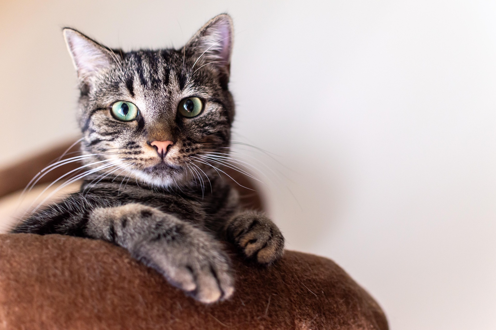

Mačka
Mačka ili domaća mačka je mali mesožder iz obitelji mačaka. Prvobitno potječe od afričke divlje mačke, a živi uz ljude već oko 3.500 godina.

Karakteristike
- Dužina: prosječno 60 cm
- Visina: 30-35 cm
- Masa: do 10 kg
- Životni vijek: 15-20 godina